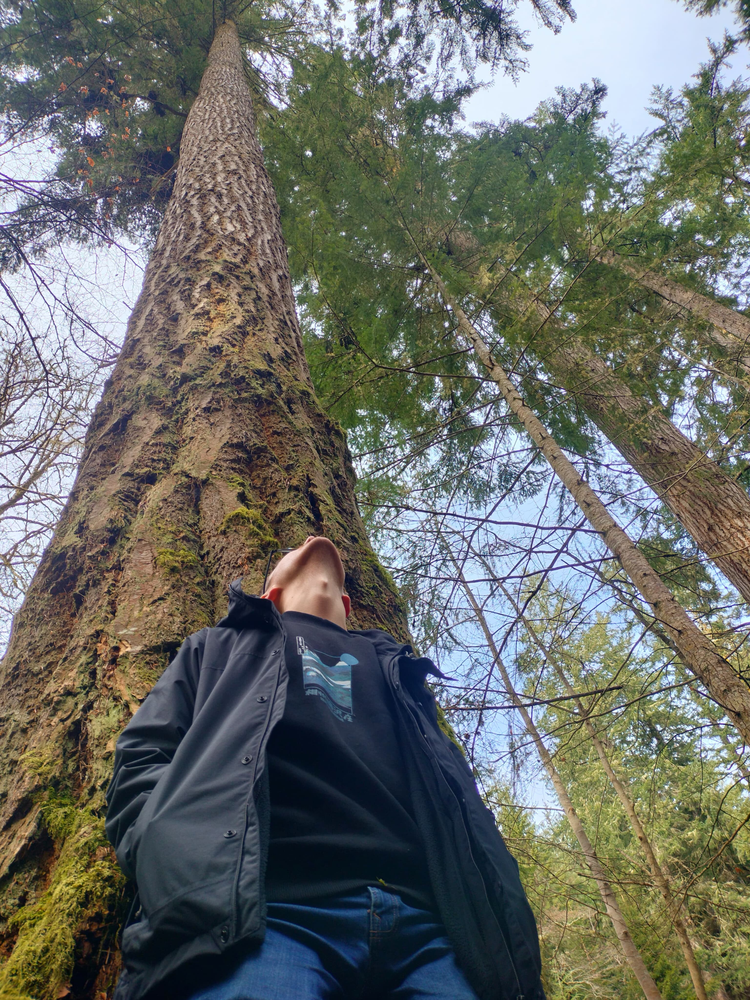
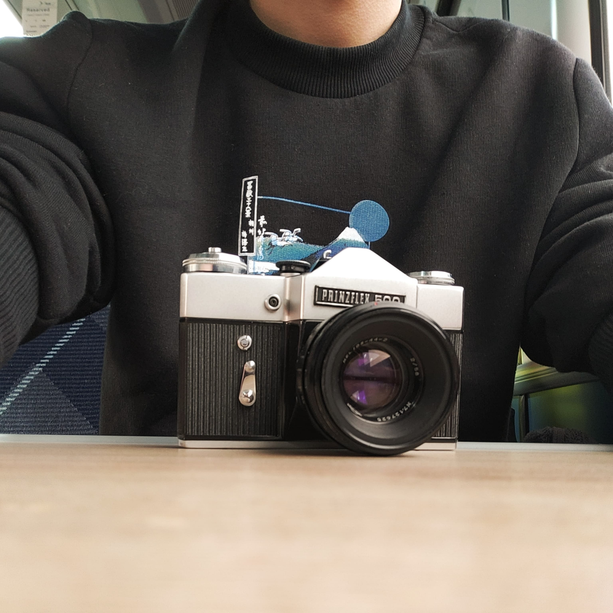

ABOUT ME
Horny scientist trying to code.


Horny scientist trying to code.
RESEARCH
DECOLONISING SBS
In 2021, I was one of four founding members of Decolonising SBS, a grassroots PhD student-led activism group based in the University of Aberdeen's School of Biological Sciences. Working together with the shared goal of identifying and dismantling systemic racism within our department and across the wider university, we are self-organised and operate independently from departmental and university management.
Although we are fundamentally limited in our power as PhD students, we've been able to forge partnerships across the university, including our valued relationships with the Students' Union and the Black, Asian and Minority Ethnic Students' Liberation Forum. Our focus is on creating social consciousness within our department, forming lasting knowledge-sharing partnerships and pushing for legislative changes at the senior management level. For example, I led in the formation of the Student Decolonising Network, an autonomous student-driven initiative connecting activists from across all Schools of the university. This network provides us student activists a space to form community, find new ways to push for decolonisation at the grassroots level and resist the university's attempts to depoliticise and deradicalise our work.

Institutional email: j.barber.21@abdn.ac.uk
Twitter: @jack_d_barber
ORCID: _______
1.17 Cruickshank Building
Old Aberdeen Campus
St. Machar Drive
AB24 3UU